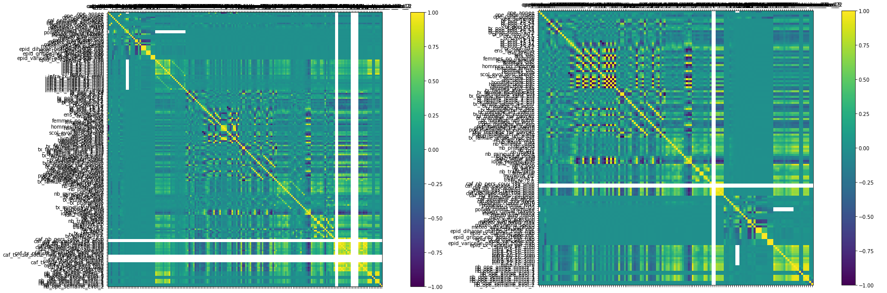
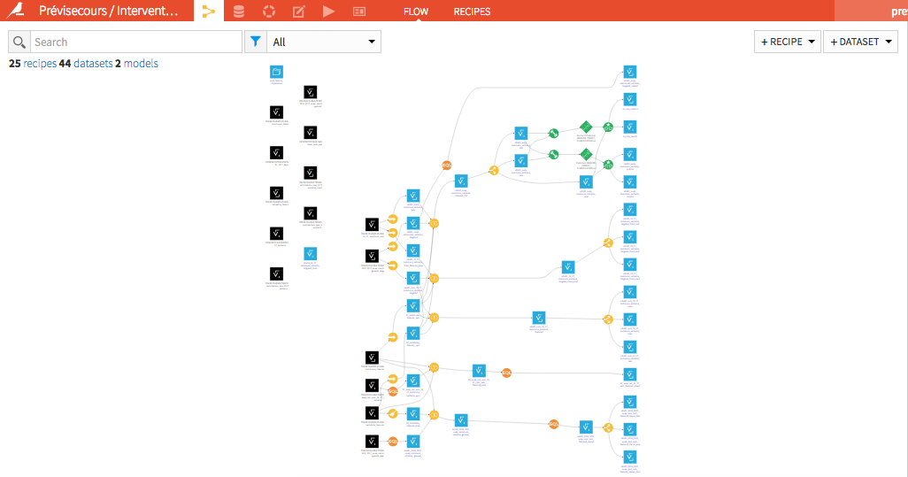
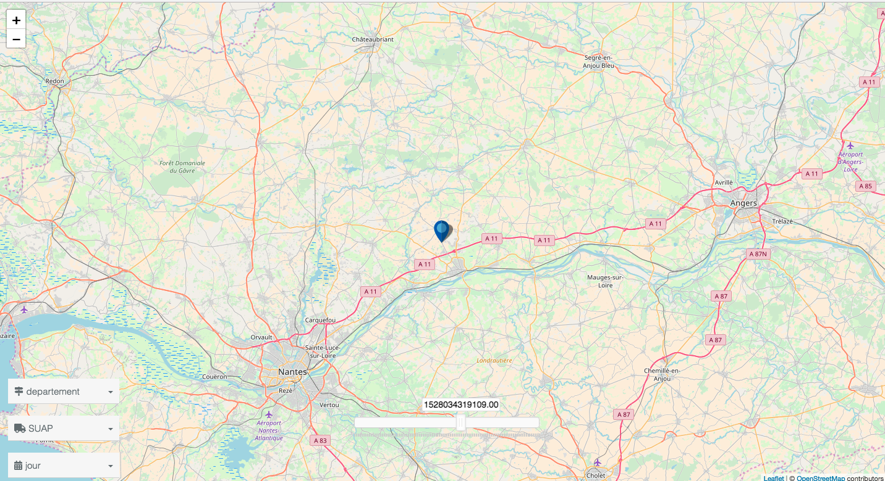

### Entrepreneurs d'Intérêt Général #### Défi Prévisecours <a href="https://previsecours.fr" style="font-size: 32px">previsecours.fr</a> <p style="font-size: 28px">Guillaume Lancrenon, Tiphaine Phe-Neau, <br> Daniel Ansellem, Fabien Antoine, Muriel Flottes et Fabrice Barret</p>
## Objectif Aider les sapeurs-pompiers à intervenir plus efficacement avec des modèles prédictifs - Modèle sur les volumes d’interventions et leurs géolocalisations pour anticiper les moyens à mobiliser - Projet en partenariat avec les <a href="http://www.sdis-91.fr" target="_blank">sapeurs-pompiers de l’Essonne</a> (SDIS 91)
## L'equipe - 10 mois - 2 profils - Full Stack Developer / Guillaume Lancrenon - Data Scientist / Tiphaine Phe-Neau - <a href="https://www.etalab.gouv.fr" target="_blank">Etalab</a> et <a href="https://www.interieur.gouv.fr/" target="_blank">Ministère de l'Intérieur</a> / MGMSIC
## Méthodologie
## Les étapes - Discussions métiers - Récupération des données - Analyses statistiques / corrélations - Machine Learning / prédictif - Produit
### 0. Discussions métiers - Comprendre l'utilisation actuelle des données - Ateliers "intuition" sur le SUAP
### Data - SDIS91: détails des sollicitations de 2010 à 2017 - __Annuel / Mensuel__: population, pyramide des âges, scolarisation, diplômes, composition des ménages, référents des ménages, FINESS (établissements de retraite, pharmacies, foyers, hopitaux...), IDH2, CAF (rsa, nombre d'allocataires)... - __Quotidien / Hebdo__: calendaire (vacances, jours fériés, fêtes), pollution, pollens (à confirmer), météo (pluie, température, humidité, durée du jour), phases de la lune, Sentinelle (épidémie)... - Aggrégation DWH unique par code insee, journée, semaine ou mois
### Machine Learning / Corrélations  - Corrélations - statistiques linéaire et non linéaire - embarquées dans les modèles de ML
### Machine Learning / Prédictions 
### Produit de départ <iframe id="freshwidget-frame" src="https://algo.previsecours.fr/dip/api/webapps/view?projectKey=PRVISECOURSVISUALISATION&webAppId=W0kS5vF&apiKey=932QkDr6PUcppTtKPUfoDWlOM8BHhSz6" scrolling="auto" allowtransparency="true" style="height: 500px; width: 100%;" frameborder="0"> </div></iframe>
### Evolution produit 
## La suite - Pilote concluant - Pérennisation + ouvertures à d'autres départements